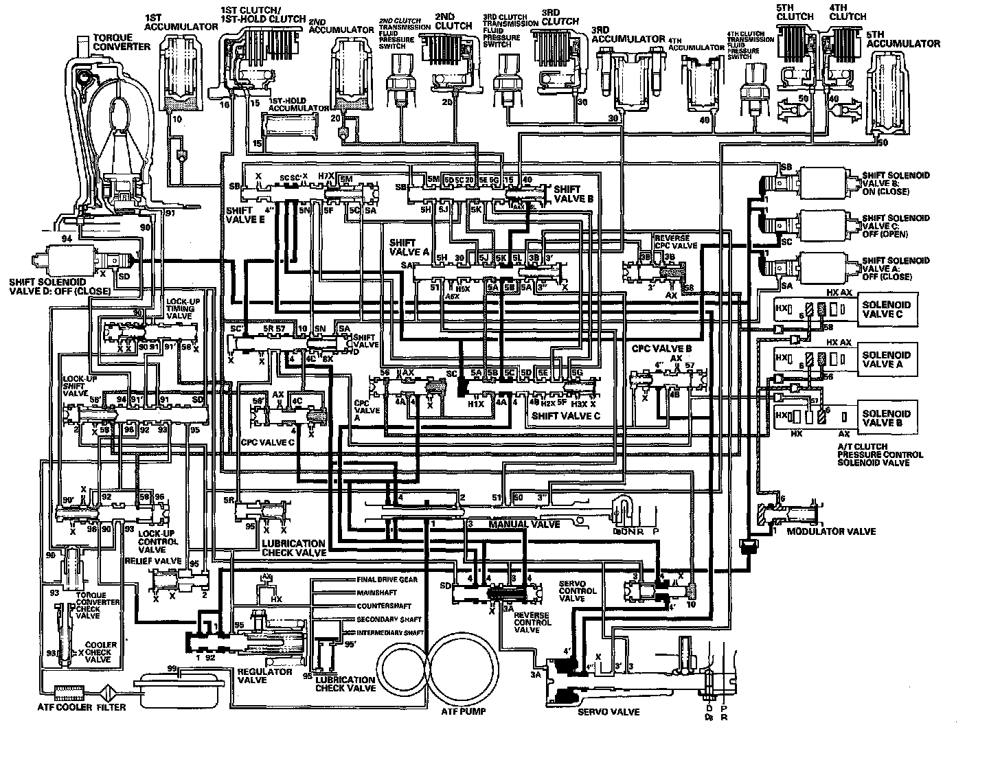

Hydraulic Flow
Hydraulic FlowDistribution of Hydraulic Pressure
As the engine turns, the ATF pump starts to operate. Automatic transmission fluid (ATF) is drawn through the ATF strainer (filter) and discharged into the hydraulic circuit. Then, ATF flowing from the ATF pump becomes line pressure that is regulated by the regulator valve. Torque converter pressure from the regulator valve enters the torque converter through the lock-up shift valve and lock-up control valve, and it is discharged from the torque converter. The torque converter check valve prevents torque converter pressure from rising.
The PCM controls shift solenoid valves A, B, C, and D ON and OFF, and the shift solenoid valves control shift solenoid pressure to the shift valves. Applying shift solenoid pressure to the shift valves moves the position of the shift valve, and switches the port of hydraulic pressure. The PCM also controls A/T clutch pressure control solenoid valves A, B and C. The A/T clutch pressure control solenoid valves regulate hydraulic pressure, and apply the pressure to CPC valves A and B, and reverse CPC valve.
When shifting between gears, the clutch is engaged by pressure from the CPC pressure mode. The PCM controls one of the shift solenoid valves to move the position of the shift valve. This movement switches the port of CPC pressure and line pressure. Line pressure is then applied to the clutch, and CPC pressure is released. Engaging the clutch with line pressure mode happens when shifting is completed.
N Position
Line pressure (1) regulated by the regulator valve flows to shift solenoid valves. The PCM controls the shift solenoid valves ON and OFF. The conditions of the shift solenoid valves and the positions of the shift valves are as follows:
^ Shift solenoid valve A is OFF, and closes the port of shift solenoid valve A pressure (SA); shift valve A stays on the left side.
^ Shift solenoid valve B is turned ON, and closes the port of shift solenoid valve B pressure (SB); shift valve B and shift valve E stay on the left side.
^ Shift solenoid valve C is OFF, and opens the port of shift solenoid valve C pressure (SC); shift valve C and shift valve D move to the right side.
^ Shift solenoid valve D is OFF, and closes the port of shift solenoid valve D pressure (SD).
Line pressure (1) also flows to the modulator valve and becomes modulator pressure (6). Modulator pressure (6) flows to the A/T clutch pressure control solenoid valves. The manual valve covers the port leading pressure to the clutches, and hydraulic pressure is not applied to the clutches.
NOTE: When used, "left" or "right" indicates direction on the hydraulic circuit.
D and D3 Positions: 1st gear shifting from the N position
When shifting to the D position or S position from the N position, the condition of the shift solenoid valves remain the same as in the N position. The manual valve is moved to the D position, and uncovers the port of line pressure (4) leading to CPC valves A and C. The PCM controls the A/T clutch pressure control solenoid valves A and C, A/T clutch pressure control solenoid valve A pressure (56) flows to the CPC valve A, and A/T clutch pressure control solenoid valve C pressure (58) flows to the CPC valve C. CPC valves A and C regulate line pressure (4), line pressure (4) becomes CPC C pressure (4C) at the CPC valve C, and becomes CPC A pressure at CPC valve A. CPC C pressure (4C) becomes 1st clutch pressure (10) at shift valve D, and 1st clutch pressure flows to the 1st clutch. CPC A pressure (4A) becomes 2nd clutch pressure (20) at shift valve B via shift valves A and C. The 1st clutch and 2nd clutch engage gently with the CPC pressure mode.
NOTE: When used, "left" or "right" indicates direction on the hydraulic circuit.

D and D3 Positions: Driving in 1st gear
The PCM turns shift solenoid valve C ON, and shift solenoid valve C covers the port of shift solenoid valve C pressure (SC) to shift valve C, and shift valve D via shift valve E. Shift solenoid valve A remains OFF, and shift solenoid valve B remains ON. Shift valves C and D are moved to the left side, shift valve D switches the port of line pressure (4) and CPC C pressure (4C) leading to the 1st clutch, and shift valve C switches the port of CPC A pressure (5A) releasing 2nd clutch pressure. Line pressure (4) becomes 1st clutch pressure (10) at shift valve D, and flows to the 1st clutch. The 1st clutch is engaged securely with the line pressure mode.
NOTE: When used, "left" or "right" indicates direction on the hydraulic circuit.
D and D3 Positions: Shifting between 1st gear and 2nd gear
As the speed of the vehicle reaches the programmed value, the PCM turns shift solenoid valve A ON, and shift solenoid valve A uncovers the port of shift solenoid valve A pressure (SA) to shift valve A. Shift solenoid valves B and C remain ON. Shift valve A is moved to the right side to uncover the port of CPC A pressure (4A) leading to the 2nd clutch. The PCM controls A/T clutch pressure control solenoid valve A, and A/T clutch pressure control solenoid valve A pressure (56) is applied to CPC valve A. CPC valve A regulates line pressure (4), and line pressure (4) becomes CPC A pressure (4A). CPC A pressure (4A) flows to shift valve B via shift valves C and A, and becomes 2nd clutch pressure (20) at shift valve B. The 2nd clutch is engaged in the CPC pressure mode. The 1st clutch is also engaged, but no power is transmitted because of the one-way clutch.
NOTE: When used, "left" or "right" indicates direction on the hydraulic circuit.
D and D3 Positions: Driving in 2nd gear
The PCM turns shift solenoid valve C OFF, and shift solenoid valve C uncovers the port of shift solenoid valve C pressure (SC) to shift valve C. Shift solenoid valves A and B remain ON. Shift valve C is moved to the right side to switch the port of line pressure (4) and CPC A pressure (4A) leading to the 2nd clutch. CPC A pressure (5B) (5K) changes to line pressure (5B) (5K) and 2nd clutch pressure (20) is changed to line pressure mode, and the 2nd clutch is engaged in the line pressure mode. The 1st clutch is also engaged, but no power is transmitted because of the one-way clutch.
NOTE: When used, "left" or "right" indicates direction on the hydraulic circuit.
D and D3 Positions: Shifting between 2nd gear and 3rd gear
As the speed of the vehicle reaches the programmed value, the PCM turns shift solenoid valve C ON, and shift solenoid valve C covers the port of shift solenoid valve C pressure (SC) to shift valve C. Shift solenoid valves A and B remain ON. Shift valve C is moved to the left side to switch the port of line pressure (4) and CPC A pressure (4A) leading to the 2nd clutch. Shift valve C also uncovers the port of CPC B pressure (4B) leading to the 3rd clutch. The PCM controls A/T clutch pressure control solenoid valves A and B. A/T clutch pressure control solenoid valve A pressure (56) is applied to CPC valve A, and A/T clutch pressure control solenoid valve B pressure (57) is applied to CPC valve B. CPC valve B regulates line pressure (4"), and line pressure (4") becomes CPC B pressure (4B). CPC B pressure flows to shift valve A via shift valves C and B, and becomes 3rd clutch pressure (30) at shift valve A. The 2nd clutch pressure (20) is changed to CPC pressure mode, and the 3rd clutch is engaged with the CPC pressure mode. The 1st clutch is also engaged, but no power is transmitted because of the one-way clutch.
NOTE: When used, "left" or "right" indicates direction on the hydraulic circuit.
D and D3 Positions: Driving in 3rd gear
The PCM turns shift solenoid valve B OFF, and shift solenoid valve B uncovers the port of shift solenoid valve B pressure (SB) to shift valve B. Shift solenoid valves A and C remain ON. Shift valve B is moved to the right side to switch the port of line pressure (5C), CPC B pressure (5J) leading to the 3rd clutch, and 2nd clutch pressure (20) releasing 2nd clutch pressure. CPC B pressure (5J) changes to line pressure (5J) and 3rd clutch pressure (30) is changed to line pressure mode, and the 3rd clutch is engaged with the line pressure mode. The 1st clutch is also engaged, but no power is transmitted because of the one-way clutch.
NOTE: When used, "left" or "right" indicates direction on the hydraulic circuit.
D Position: Shifting between 3rd gear and 4th gear
As the speed of the vehicle reaches the programmed value, the PCM turns shift solenoid valve C OFF, and shift solenoid valve C uncovers the port of shift solenoid valve C pressure (SC) to shift valve C. Shift solenoid valve A remains ON, and shift solenoid valve B remains OFF. Shift valve C is moved to the right side to switch the port of line pressure (4) and CPC B pressure (4B) leading to the 3rd clutch. Shift valve C also uncovers the port of CPC A pressure (4A) leading to the 4th clutch. The PCM controls A/T clutch pressure control solenoid valves A and B. A/T clutch pressure control solenoid valve A pressure (56) is applied to the CPC valve A, and A/T clutch pressure control solenoid valve B pressure (57) is applied to CPC valve B. CPC valve A regulates line pressure (4), and line pressure (4) becomes CPC A pressure (4A). CPC A pressure (4A) flows to shift valve B via shift valves C and A, and becomes 4th clutch pressure (40) at shift valve B. The 3rd clutch pressure (30) is changed to CPC pressure mode, and the 4th clutch is engaged in the CPC pressure mode. The 1st clutch is also engaged, but no power is transmitted because of the one-way clutch.
NOTE: When used, "left" or "right" indicates direction on the hydraulic circuit.
D Position: Driving in 4th gear
The PCM turns shift solenoid valve A OFF, and shift solenoid valve A covers the port of shift solenoid valve A pressure (SA) to the shift valve A. Shift solenoid valves B and C remain OFF. The shift valve A is moved to the left side to switch the port of pressure (5B), CPC A pressure (5A) (5L) leading to the 4th clutch, and 3rd clutch pressure (30) releasing 3rd clutch pressure. CPC A pressure (5L) changes to line pressure (5L) and 4th clutch pressure (40) is changed to line pressure mode, and the 4th clutch is engaged with the line pressure mode. The 1st clutch is also engaged, but no power is transmitted because of the one-way clutch.
NOTE: When used, "left" or "right" indicates direction on the hydraulic circuit.
D Position: Shifting between 4th gear and 5th gear
As the speed of the vehicle reaches the programmed value, the PCM turns shift solenoid valve C ON, and shift solenoid valve C covers the port of shift solenoid valve C pressure (SC) to shift valve C. Shift solenoid valve A remains OFF, and shift solenoid valve B remains OFF. Shift valve C is moved to the left side to switch the port of line pressure (4) and CPC A pressure (4A) leading to the 4th clutch. Shift valve C also uncovers the port of CPC B pressure (4B) leading to the 5th clutch. The PCM controls A/T clutch pressure control solenoid valves A and B. A/T clutch pressure control solenoid valve A pressure (56) is applied to the CPC valve A, and A/T clutch pressure control solenoid valve B pressure (57) is applied to CPC valve B. CPC valve B regulates line pressure (4"), and line pressure (4") becomes CPC B pressure (4B). CPC B pressure (4B) flows to shift valve A via shift valves C and B, and becomes 5th clutch pressure (51) at shift valve A. The 4th clutch pressure (40) is changed to CPC pressure mode, and the 5th clutch is engaged in the CPC pressure mode. The 1st clutch is also engaged, but no power is transmitted because of the one-way clutch.
NOTE: When used, "left" or "right" indicates direction on the hydraulic circuit.
D Position: Driving in 5th gear
The PCM turns shift solenoid valve B ON, and shift solenoid valve B covers the port of shift solenoid valve B pressure (SB) to shift valve B. Shift solenoid valve A remains OFF, and shift solenoid valve C remains ON. Shift valve B is moved to the left side to switch the port of line pressure (5H), CPC B pressure (5D) leading to the 5th clutch, and 4th clutch pressure (40) releasing 4th clutch pressure. CPC B pressure (5H) changes to line pressure (5H) and 5th clutch pressure (51) (50) is changed to line pressure mode, and the 5th clutch is engaged in the line pressure mode. The 1st clutch is also engaged, but no power is transmitted because of the one-way clutch.
NOTE: When used, "left" or "right" indicates direction on the hydraulic circuit.
Driving in 1st gear (engaged with 1st and 1st-hold clutches) in the sequential sportshift mode
Line pressure (1) regulated by the regulator valve flows to shift solenoid valves. The PCM controls the shift solenoid valves ON and OFF. The conditions of the shift solenoid valves and the positions of the shift valves are as follows:
^ Shift solenoid valve A is OFF, and closes the port of shift solenoid valve A pressure (SA); shift valve A stays on the left side.
^ Shift solenoid valve B is turned ON, and closes the port of shift solenoid valve B pressure (SB); shift valve B and shift valve E stay on the left side.
^ Shift solenoid valve C is turned ON, and closes the port of shift solenoid valve C pressure (SC); shift valve C and shift valve D stay on the left side.
^ Shift solenoid valve D is OFF, and closes the port of shift solenoid valve D pressure (SD).
Line pressure (4) becomes 1st clutch pressure (10) at shift valve D, and flows to the 1st clutch. The 1st clutch is engaged. The PCM controls A/T clutch pressure control solenoid valve C, and A/T clutch pressure control solenoid valve C pressure (58) is applied to CPC valve C via the lock-up shift valve. CPC valve C regulates line pressure (4), and line pressure (4) becomes CPC C pressure (4C). CPC C pressure (4C) flows to shift valve B via shift valves D, E, and C, and becomes 1st-hold clutch pressure (15) at shift valve B. 1st-hold clutch pressure (15) is applied to the 1st-hold clutch, and the 1st-hold clutch is engaged.
NOTE: When used, "left" or "right" indicates direction on the hydraulic circuit.
R Position: Shifting to the R position from the P or N position
The PCM controls the shift solenoid valves ON and OFF. The conditions of the shift solenoid valves and the positions of the shift valves are as follows:
^ Shift solenoid valve A is OFF, and closes the port of shift solenoid valve A pressure (SA); shift valve A stays on the left side.
^ Shift solenoid valve B is turned ON, and closes the port of shift solenoid valve B pressure (SB); shift valve B and shift valve E stay on the left side.
^ Shift solenoid valve C is OFF, and opens the port of shift solenoid valve C pressure (SC); shift valve C and shift valve D move to the right side.
^ Shift solenoid valve D is turned ON, and opens the port of shift solenoid valve D pressure (SD); reverse control valve moves to the right side.
The manual valve is moved to the R position, and line pressure (1) becomes line pressure (3) at the manual valve. Line pressure (3) passes through the reverse control valve, and becomes line pressure (3A), then flows to the servo valve. Line pressure (3A) pushes the servo valve to the reverse position. Line pressure (3) also flows to the reverse CPC valve, and becomes reverse CPC pressure (3B) (3"). Reverse CPC pressure (3") becomes 5th clutch pressure (50) at the manual valve, and 5th clutch pressure (50) flows to the 5th clutch. The 5th clutch is engaged with reverse CPC pressure mode.
NOTE: When used, "left" or "right" indicates direction on the hydraulic circuit.
R Position: Driving in reverse gear
As the speed of the vehicle reaches the programmed value, the PCM turns shift solenoid valve A ON, and shift solenoid valve A uncovers the port of shift solenoid valve A pressure (SA) to shift valve A. Shift valve A is moved to the right side to switch the port of line pressure (3') and reverse CPC pressure (3B) leading to the 5th clutch. Line pressure (3) flows to the manual valve via the servo valve and shift valve A, and becomes 5th clutch pressure (50) at the manual valve. The 5th clutch pressure (50) flows to the 5th clutch, and the 5th clutch is engaged with the line pressure mode.
Reverse Inhibitor Control
When the R position is selected while the vehicle is moving forward at a speed over 6 mph (10 km/h), the PCM commands shift solenoid valve D to remain OFF so that shift solenoid valve D pressure (SD) is not applied to the reverse control valve. Line pressure (3) stops at the reverse control valve, and is not applied to the servo valve. No power is transmitted to the reverse direction.
NOTE: When used, "left" or "right" indicates direction on the hydraulic circuit.
P Position
The PCM controls the shift solenoid valves ON and OFF. The conditions of the shift solenoid valves and the positions of the shift valves are as follows:
^ Shift solenoid valve A is OFF, and closes the port of shift solenoid valve A pressure (SA); shift valve A stays on the left side.
^ Shift solenoid valve B is turned ON, and closes the port of shift solenoid valve B pressure (SB); shift valve B and shift valve E stay on the left side.
^ Shift solenoid valve C is OFF, and opens the port of shift solenoid valve C pressure (SC); shift valve C and shift valve D move to the right side.
^ Shift solenoid valve D is turned ON, and opens the port of shift solenoid valve D pressure (SD); reverse control valve moves to the right side.
The manual valve is moved to the P position, and line pressure (1) becomes line pressure (3) at the manual valve. Line pressure (3) passes through the reverse control valve, and becomes line pressure (3A), then flows to the servo valve. Line pressure (3A) pushes the servo valve to the reverse position. Line pressure (3) flows to the manual valve via the reverse CPC valve and shift valve A, and stops at the manual valve. Hydraulic pressure is not applied the clutches.
NOTE: When used, "left" or "right" indicates direction on the hydraulic circuit.